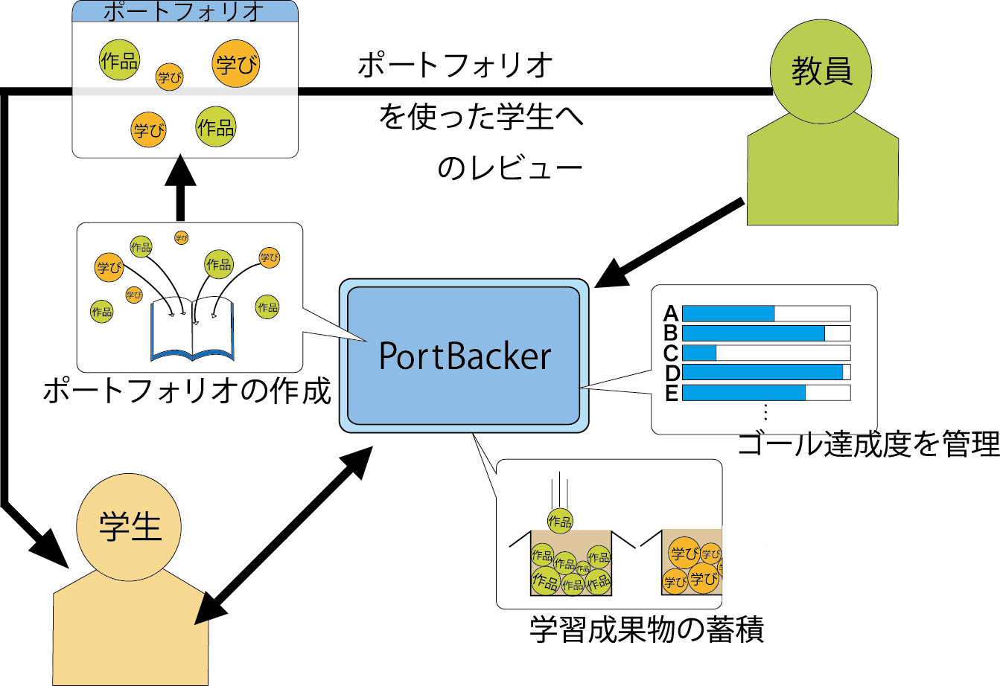
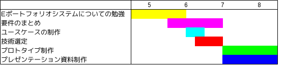

高度ICT演習向け
eポートフォリオシステムの構築
B2
内山 武尊
川口 拓郎
藤原 拓郎
水尻 裕人
諸原 聖
B3
赤木 勇極
菅野 久樹
佐藤 祐磨
中田 友貴
B4
◎中野 佑
長崎 洸祐
山本 賢人
教員
神谷 年洋
目次
背景
問題
教育系の目的
eポートフォリオシステム
システムの全体像
課題
まとめ
フォントの統一
背景(1/2)
はこだて未来大学の能動的な学習に
PBL(Project-Based Learning)がある
プロジェクト活動を通して課題を解決する教育手法
学習者の自律性や自主性に重点を置く
システム・ソフトウェア開発の基礎となる基礎やスキルを習得できる
社会にある解のない問題に対応する方法を身につけられる
背景(2/2)
プロジェクト学習
必修科目で学部3年が履修する
学部やコースに関係なくチームを編成して1年かけて問題を解決する
高度ICT演習
単位が出ないので有志の学生が参加する
学部2年から修士2年までの学生が参加し互いにスキルアップを図る
問題
MoodleというCMS
*
が導入されている
→学生に着目したサポートはしていない
能動的な学習を支援するシステムがない
PDCA図
*
CMS : Course Management System
教育系の目的
高度ICT演習における学習の振り返りをサポートする
高度ICT演習担当の先生と学生からシステムの要件を集めてまとめる
ポートフォリオシステムの開発を行う
eポートフォリオシステム
紙のポートフォリオと比較して
学習者の学習活動の可視化が得意
ネットワークを介した相互利用が可能
紙のポートフォリオに比べて維持管理
が容易
導入例
金沢工業大学 KITポートフォリオシステム など
ヒアリング
ステークホルダーである高度ICT演習の担当の先生にeポートフォリオシステムについてのヒアリングを行いました
Q どうしてeポートフォリオシステムが必要なのか
A 今まで学習してきたことを振り返ったり、学習の質の証拠としてつこうことができるようになる
Q 学生や教員はどのように使うのか
A PDCAサイクルを回したりフィードバックをする
Q 学生や教員にはどのような機能があればいいのか
A 成果物の管理・学習成果物の蓄積・ゴール設定・ポートフォリオの検索
システムの利用図

システムの構成図
使用技術の選定
Python用の軽量ウェブアプリケーションフレームワークFlaskを使ってシステムを作ることになった
RubyのSinatraに比べて日本語のドキュメントが多かった
Ruby on Railsに比べてバージョンが変わってもそれほど大きな違いが現れない
今後の拡張性やを考えてPloneやMaharaなどの既存のシステムを使わず、１から作ることになった
システム、フレームワークでスライド1枚
学び
グループ全体で１つにまとめるか学年に分けるか、それとも個人個人書くか
KPT
スケジュール
今後はこういうふうに活動する予定で

スケジュールを整理
まとめ
←
→
/
Go to slide:
#